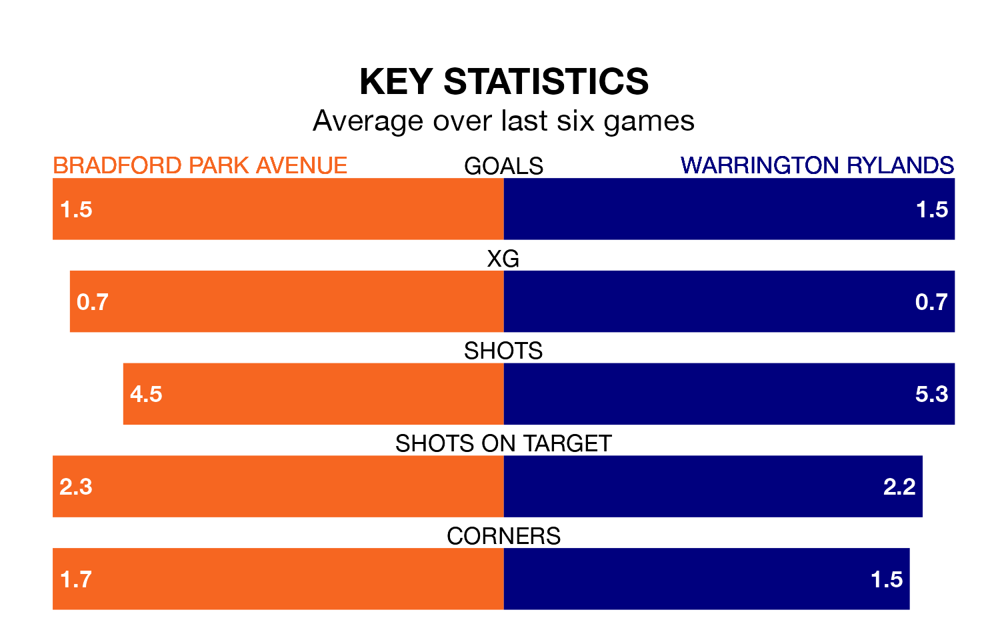

Struggling Bradford Park Avenue face Warrington Rylands at the Horsfall Stadium on Saturday looking to build on a win in their last league outing.
After securing all three points with a 1-0 victory over Stafford Rangers on March 2, Bradford Park Avenue sit 19th in the Northern Premier League.
They travel to play a Warrington Rylands side sixth in the standings, who lost in their last match, 4-1 against Gainsborough Trinity, on February 24.
With 36 goals in 33 games so far this season, Bradford Park Avenue are scoring at below the league average rate with 1.1 goals per game. And they are conceding more than average, letting in 67 goals at a rate of 2.0 per game.
Warrington Rylands, meanwhile, are average scorers, with 1.6 goals per game. They have conceded 1.2 goals per game.
The hosts are in mixed form in the Northern Premier League, with three wins and a draw from their last six games.
With two wins and two draws over that period, the away side's form is slightly worse – they have taken eight points from 18, compared to Bradford Park Avenue's 10.
Updated: 09:34 (UTC), 08/03/24